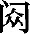

（chù）：即东方阿
佛，译义为“无动”或“不动佛”。《维摩经·阿
（chù）：即东方阿
佛，译义为“无动”或“不动佛”。《维摩经·阿 佛品》中说“国名妙喜，佛号无动”。
佛品》中说“国名妙喜，佛号无动”。“楞严咒”是《楞严经》最重要的内容之一，是本经的正修法门。其宣说因缘在卷一就出现了，是为了解救阿难脱离魔难而由佛顶化佛宣说的。本卷则因阿难为了救度末世一切众生能够深入禅定，远离魔事，于菩提心不退转，而请问佛陀如何安立道场，修习“楞严咒”。佛特别指出如果持四种清净律仪而仍有宿习未能灭除，可持诵“楞严咒”，并详细讲解了末世时期如何建立符合清净轨则之专修道场以及行持仪轨。随后，阿难又请佛重新宣说“楞严咒”，于是佛从顶髻涌出百宝光，光中涌出千叶宝莲，有化身佛坐于其中，宣说了“楞严神咒”。又为会众宣示了此神咒的持诵功德，以及对诸佛和诸众生分别所具有的十种无上法力。会中无数金刚、梵王、天帝释、四大天王、天龙八部、天神地祇以及金刚藏王菩萨等听了佛的讲述，纷纷表示愿意护持诵持此咒的无量众生。
“楞严咒”全称“佛顶光明摩诃萨怛多般怛啰无上神咒”、“佛顶光聚悉怛多般怛啰秘密伽陀微妙章句”，简称“佛顶光聚般怛啰咒”、“楞严咒”，其中“摩诃萨怛多般怛啰”意为“大白伞盖”。此咒长达四百三十九句，三千六百二十字，分为五会，在汉传佛教中被称为咒中之王。“楞严咒”历来被认为对于除魔、护戒、禅定证果以及增益功德、种种成就等具有不可思议的功德利益。自唐末《楞严经》译出之后，以持诵“楞严咒”为内容的楞严法会即开始流行，宋代之后尤盛。后来“楞严咒”被列入汉传佛教日课，成为丛林早课的首要内容，其对汉传佛教的重要性不言而喻。
本卷后部分中，阿难又请问从凡夫开始到大涅槃的菩萨行修证阶位，佛讲说了修此真三摩地应当先认识众生和世界二种颠倒生起之因，颠倒灭除，即是真三摩地。由此二颠倒有十二类众生（胎、卵、湿、化、有色、无色、有想、无想、非有色、非无色、非有想、非无想）颠倒之相。
“阿难，汝问摄心，我今先说入三摩地修学妙门。求菩萨道，要先持此四种律仪，皎如冰霜，自不能生一切枝叶，心三口四 (1) ，生必无因。阿难，如是四事，若不遗失，心尚不缘色香味触，一切魔事，云何发生？若有宿习，不能灭除，汝教是人一心诵我佛顶光明摩诃萨怛多般怛啰无上神咒。斯是如来无见顶相，无为心佛，从顶发辉，坐宝莲华，所说心咒。且汝宿世与摩登伽历劫因缘，恩爱习气，非是一生及与一劫，我一宣扬，爱心永脱，成阿罗汉。彼尚淫女，无心修行，神力冥资，速证无学。云何汝等在会声闻，求最上乘，决定成佛？譬如以尘，扬于顺风，有何艰险？
注释：
(1) 心三口四：心之贪、嗔、痴三恶业，口之妄语、绮语、两舌、恶口四恶业。
译文：
“阿难，你问如何摄心，我现在先说入三摩地的修学妙门。求菩提道的人，要先持此四种律仪为根本，使身心皎洁如冰霜，自然就不会生出一切枝叶，诸如心三之贪嗔痴、口四之妄语、绮语、两舌、恶口，就一定没有生起之因了。阿难，此四种律仪若能持守，心尚不攀缘色、香、味、触等尘境，一切魔事怎么会发生呢？如果有宿世的习气惑业种子不能一时灭除，你教这人一心诵念我所说的佛顶光明摩诃萨怛多般怛啰无上神咒。这是如来无见顶相、无为心佛从顶上发光，坐宝莲花上所说的心咒。且如你在过去世与摩登伽女有历劫的因缘，恩爱习气不是一生一世及一劫的积累，即使这样，我此神咒一宣扬，摩登伽女的爱心习气永远解脱，成就阿罗汉果位。摩登伽尚且是一个淫女，无心修行，但依神咒之力的暗中加持，速证无学果位。怎么你们会中的声闻，求最上乘佛法，依此神咒之力，难道还不能决心成佛吗？宿世习气遇到神咒，就如将微尘在顺风中扬撒一样，应时散尽，还有什么艰险呢？
“若有末世，欲坐道场，先持比丘清净禁戒，要当选择戒清净者第一沙门，以为其师。若其不遇真清净僧，汝戒律仪必不成就。戒成已后，著新净衣，然香闲居，诵此心佛所说神咒一百八遍，然后结界，建立道场，求于十方现住国土无上如来，放大悲光，来灌其顶。阿难，如是末世清净比丘，若比丘尼、白衣檀越 (1) ，心灭贪淫，持佛净戒，于道场中，发菩萨愿，出入澡浴，六时行道。如是不寐，经三七日，我自现身，至其人前，摩顶安慰，令其开悟。”
注释：
(1) 檀越：梵语音译，施主。
译文：
“若有末世的修行者，欲坐道场修行大定，首先应当受持比丘清净禁戒，并且要选择持戒清净的第一沙门作为授戒师。如果没遇到真清净僧，你所受戒律必定不能成就真实戒体。无漏戒体成就以后，穿上新净衣服，燃香闲居静坐，诵此心佛所说的神咒一百零八遍，然后结界，建立修道的坛场，祈求十方世界现住国土的无上如来都放大悲光，来灌他的顶。阿难，在末法之世，这样的持戒清净比丘以及比丘尼、白衣施主，心灭贪淫等念，持守佛制一切净戒，于道场中发菩萨大愿，出入道场必须沐浴洁身，昼夜六时行持道法。这样不眠不休精进修行，经过三个七日，我自会现身，到其人面前，为其摩顶安慰，令他开悟。”
阿难白佛言：“世尊，我蒙如来无上悲诲，心已开悟，自知修证无学道成。末法修行，建立道场，云何结界，合佛世尊清净轨则？”佛告阿难：“若末世人愿立道场，先取雪山大力白牛，食其山中肥腻香草，此牛唯饮雪山清水，其粪微细。可取其粪和合旃檀，以泥其地。若非雪山，其牛臭秽，不堪涂地。别于平原，穿去地皮，五尺以下取其黄土，和上旃檀、沉水、苏合、熏陆、郁金、白胶、青木、零陵、甘松及鸡舌香 (1) ，以此十种，细罗为粉，合土成泥，以涂场地。
注释：
(1) 沉水：即沉香。苏合：即苏合香。熏陆：即熏陆香。郁金：即郁金香。白胶：即枫香脂。青木：即青木香。甘松：能和合众香。鸡舌：即丁香。
译文：
阿难对佛说：“世尊，我蒙如来无上慈悲教诲，心已开悟，自知如此修证，无学道果定可成就。然而末法时期修行，如何结界以建立道场才符合世尊的清净轨则？”佛告诉阿难：“如果末世之修行人，愿意建立道场，先找雪山的大力白牛，此牛只吃山中的肥腻香草，只饮雪山的清水，其粪微细而无臭秽。可取此大力白牛的粪与旃檀和合成泥，以此涂抹地面。若不是雪山白牛，其粪臭秽，不能用来涂地。因在别处平原上，挖掘地面至五尺深，然后取五尺以下的黄土，把旃檀、沉水、苏合、熏陆、郁金、白胶、青木、零陵、甘松及鸡舌香等十种香，合在一起细磨并细罗为粉，和上黄土合成泥，以涂抹地面。
“方圆丈六，为八角坛。坛心置一金、银、铜、木所造莲华，华中安钵，钵中先盛八月露水，水中随安所有华叶。取八圆镜，各安其方，围绕华钵。镜外建立十六莲华，十六香炉。间华铺设，庄严香炉。纯烧沉水，无令见火。取白牛乳，置十六器，乳为煎饼，并诸砂糖、油饼、乳糜、苏合、蜜姜、纯酥、纯蜜，于莲华外各各十六，围绕华外，以奉诸佛及大菩萨。每以食时，若在中夜，取蜜半升，用酥三合，坛前别安一小火炉，以兜楼婆香煎取香水 (1) ，沐浴其炭，然令猛炽，投是酥蜜于炎炉内，烧令烟尽，享佛菩萨。
注释：
(1) 兜楼婆香：一种香名。或译为“香草”、“白茅香”。
译文：
“坛方圆一丈六尺，呈八角形。坛心放置一个用金、银、铜、木所造的莲花，在莲花中安置一钵，钵中先盛上八月的露水，水中随意安放所有花叶。再取八面圆镜，安放在八角坛的八方，镜子围绕着花钵。圆镜之外，再放置十六个莲花和十六个香炉，香炉与花交错安置，庄严香炉。香炉内纯烧沉水香，勿使见到火光。再取雪山白牛乳，安放十六个器皿，然后煎牛乳做成饼，并将饼和砂糖、油饼、乳糜、苏合、蜜姜、纯酥、纯蜜等，各分盛于十六个器皿中，使其围绕在莲花外面，以供养诸佛及大菩萨。每日日中受食之时，以上述供品供养佛菩萨。如果受食在中夜，则取蜜半升，再加酥三合，坛前另外安置一个小火炉，以兜楼婆香煎成香水来洗所用木炭，待炭干后，投于炉内使其猛烈燃烧，此时将酥和蜜也投入炉火中，烧至烟尽，用烟来供养佛、菩萨。
“令其四外，遍悬幡华，于坛室中四壁，敷设十方如来及诸菩萨所有形像。应于当阳张卢舍那、释迦、弥勒、阿 、弥陀 (1) ，诸大变化观音形像，兼金刚藏，安其左右；帝释、梵王、乌刍瑟摩并蓝地迦、诸军茶利与毗俱胝、四天王等 (2) ，频那夜迦 (3) ，张于门侧，左右安置。又取八镜覆悬虚空，与坛场中所安之镜方面相对，使其形影重重相涉。
注释：
(1)
阿
（chù）：即东方阿
佛，译义为“无动”或“不动佛”。《维摩经·阿
佛品》中说“国名妙喜，佛号无动”。
(2) 梵王：即大梵天王。乌刍瑟摩：明王名，即火头金刚。蓝地迦：即青面金刚。军茶利：即解怨结金刚。毗俱胝：即毗俱胝菩萨，准提观音。
(3) 频那夜迦：又译“毗那夜迦”，即大圣欢喜天，象头人身。或以频那、夜迦为猪头、象鼻二使。
译文：
“八角坛外面的四周，悬挂满各色幡、花，于坛室内四壁上，敷设十方如来及诸菩萨的圣像。在壁面的向阳正位处悬挂卢舍那佛、释迦牟尼佛、弥勒佛、阿 佛、阿弥陀佛，观世音菩萨的诸多变化形像以及金刚藏菩萨，安置于左右两边；将帝释天、大梵天王、乌刍瑟摩、蓝地迦、诸军茶利、毗俱胝、四大天王等像，以及频那、夜迦，张贴于门两侧，左右分置。又取八面镜子覆悬在虚空中，与坛中八面圆镜彼此相对，使镜中影形交相互照，重重无尽。
佛、阿弥陀佛，观世音菩萨的诸多变化形像以及金刚藏菩萨，安置于左右两边；将帝释天、大梵天王、乌刍瑟摩、蓝地迦、诸军茶利、毗俱胝、四大天王等像，以及频那、夜迦，张贴于门两侧，左右分置。又取八面镜子覆悬在虚空中，与坛中八面圆镜彼此相对，使镜中影形交相互照，重重无尽。
“于初七中，至诚顶礼十方如来、诸大菩萨、阿罗汉号，恒于六时，诵咒围坛，至心行道。一时常行一百八遍。第二七中，一向专心发菩萨愿，心无间断。我毗奈耶先有愿教。第三七中，于十二时，一向持佛般怛啰咒。至第七日，十方如来一时出现，镜交光处，承佛摩顶，即于道场，修三摩地；能令如是末世修学，身心明净，犹如琉璃。阿难，若此比丘本受戒师，及同会中十比丘等，其中有一不清净者，如是道场，多不成就。从三七后，端坐安居，经一百日。有利根者，不起于座得须陀洹；纵其身心圣果未成，决定自知成佛不谬。汝问道场，建立如是。”
译文：
“在第一个七日中，至诚顶礼十方如来、诸大菩萨、阿罗汉的名号，六时之中，不间断地诵咒绕坛，以至诚心经行诵咒。一个时辰持诵楞严心咒一百零八遍。第二个七日中，一意专心发菩萨愿，心无间断。我在毗奈耶中已先有关于发愿的教言。第三个七日中，昼夜十二时一心持诵佛顶般怛啰神咒。至第七日，十方如来就会于镜光交映处同时出现，此修行人亲承佛摩顶，即在道场中修习三摩地；能使那些末法中的修行者，身心明净，如同琉璃一样。阿难，如果这位比丘原本的受戒师，或同入坛行道的十位比丘中，其中有一人持戒不清净，这样的道场就不能成就。从第三个七日之后，修行者端坐安居，经过一百日，如果是利根，不起座位就证得须陀洹果；纵然此人身心尚未证成圣果，但是其心明净，自己知道决定能够成佛，绝无错谬。你问建立道场之事，如此就是。”
阿难顶礼佛足而白佛言：“自我出家，恃佛 爱，求多闻故，未证无为。遭彼梵天邪术所禁，心虽明了，力不自由，赖遇文殊，令我解脱。虽蒙如来佛顶神咒，冥获其力，尚未亲闻。惟愿大慈，重为宣说，悲救此会诸修行辈，末及当来在轮回者，承佛密音，身意解脱。”于时会中一切大众普皆作礼，伫闻如来秘密章句。
爱，求多闻故，未证无为。遭彼梵天邪术所禁，心虽明了，力不自由，赖遇文殊，令我解脱。虽蒙如来佛顶神咒，冥获其力，尚未亲闻。惟愿大慈，重为宣说，悲救此会诸修行辈，末及当来在轮回者，承佛密音，身意解脱。”于时会中一切大众普皆作礼，伫闻如来秘密章句。
译文：
阿难顶礼佛足而对佛说：“自我出家以来，仗佛骄爱，只求多闻而未能实证无为圣果，因而道力微薄。遭受梵天邪术的控制后，心里虽然明了清醒，但道力不全，不能自由，幸赖文殊密诵神咒，使我解脱魔难。我虽蒙如来佛顶神咒的解救，暗中获其加持力，但尚未亲耳闻听。唯愿大慈世尊，再为宣说此咒，大悲救拔此会的诸修行者，以及将来末法时在轮回苦海中的众生，承佛密咒音声的加持，身心俱得解脱。”这时，会中的一切大众，一齐向佛顶礼，恭听佛陀宣说秘密章句。
尔时，世尊从肉髻中涌百宝光，光中涌出千叶宝莲，有化如来坐宝华中，顶放十道百宝光明，一一光明皆遍示现十恒河沙，金刚密迹，擎山持杵，遍虚空界。大众仰观，畏爱兼抱，求佛哀佑，一心听佛无见顶相，放光如来，宣说神咒：
南无萨怛他苏伽多耶阿罗诃帝三藐三菩陀写一萨怛他佛陀俱胝瑟尼钐二南无萨婆勃陀勃地萨跢鞞弊三南无萨多南三藐三菩陀俱知南四婆舍啰婆迦僧伽喃五南无卢鸡阿罗汉跢喃六南无苏卢多波那喃七南无娑羯唎陀伽弥喃八南无卢鸡三藐伽跢喃九三藐伽波啰底波多那喃十南无提婆离瑟十一南无悉陀耶毗地耶陀啰离瑟十二舍波奴揭啰诃娑诃娑啰摩他喃十三南无跋啰诃摩泥十四南无因陀啰耶十五南无婆伽婆帝十六嚧陀啰耶十七乌摩般帝十八娑醯夜耶十九南无婆伽婆帝二十那啰野拏耶二十一槃遮摩诃三慕陀啰二十二南无悉羯唎多耶二十三南无婆伽婆帝二十四摩诃伽罗耶二十五地唎般剌那伽啰二十六毗陀啰波拏伽罗耶二十七阿地目帝二十八尸摩舍那泥婆悉泥二十九摩怛唎伽拏三十南无悉羯唎多耶三十一南无婆伽婆帝三十二多他伽跢俱啰耶三十三南无般头摩俱啰耶三十四南无跋阇罗俱啰耶三十五南无摩尼俱啰耶三十六南无伽阇俱啰耶三十七南无婆伽婆帝三十八帝唎茶输啰西那三十九波啰诃啰拏啰阇耶四十跢他伽多耶四十一南无婆伽婆帝四十二南无阿弥多婆耶四十三哆他伽多耶四十四阿啰诃帝四十五三藐三菩陀耶四十六南无婆伽婆帝四十七阿刍鞞耶四十八跢他伽多耶四十九阿啰诃帝五十三藐三菩陀耶五十一南无婆伽婆帝五十二鞞沙阇耶俱卢吠柱唎耶五十三般啰婆啰阇耶五十四跢他伽多耶五十五南无婆伽婆帝五十六三补师毖多五十七萨怜捺啰剌阇耶五十八跢他伽多耶五十九阿啰诃帝六十三藐三菩陀耶六十一南无婆伽婆帝六十二舍鸡野母那曳六十三跢他伽多耶六十四阿啰诃帝六十五三藐三菩陀耶六十六南无婆伽婆帝六十七剌怛那鸡都啰阇耶六十八跢他伽多耶六十九阿啰诃帝七十三藐三菩陀耶七十一帝瓢南无萨羯唎多七十二翳昙婆伽婆多七十三萨怛他伽都瑟尼钐七十四萨怛多般怛七十五南无阿婆啰视耽七十六般啰帝扬歧啰七十七萨啰婆部多揭啰诃七十八尼羯啰诃揭迦啰诃尼七十九跋罗毖地耶叱陀你八十阿迦啰蜜唎柱八十一般唎怛啰耶伫揭唎八十二萨啰婆槃陀那目叉尼八十三萨啰婆突瑟吒八十四突悉乏般那你伐啰尼八十五赭都啰失帝南八十六羯罗诃娑诃萨罗若阇八十七毗多崩娑那羯唎八十八阿瑟吒冰舍帝南八十九那叉刹怛啰若阇九十波啰萨陀那羯唎九十一阿瑟吒南九十二摩诃揭啰诃若阇九十三毗多崩萨那羯唎九十四萨婆舍都嚧你婆啰若阇九十五呼蓝突悉乏难遮那舍尼九十六毖沙舍悉怛啰九十七阿吉尼乌陀迦啰若阇九十八阿般啰视多具啰九十九摩诃般啰战持一百摩诃叠多一百一摩诃帝阇二摩诃税多阇婆啰三摩诃跋啰槃陀啰婆悉你四阿唎耶多啰五毗唎俱知六誓婆毗阇耶七跋阇啰摩礼底八毗舍嚧多九勃腾罔迦十跋阇啰制喝那阿遮一百十一摩啰制婆般啰质多十二跋阇啰擅持十三毗舍啰遮十四扇多舍鞞提婆补视多十五苏摩嚧波十六摩诃税多十七阿唎耶多罗十八摩诃婆啰阿般啰十九跋阇啰商羯啰制婆二十跋阇啰俱摩唎一百二十一俱蓝陀唎二十二跋阇啰喝萨多遮二十三毗地耶乾遮那摩唎迦二十四啒苏母婆羯啰跢那二十五鞞嚧遮那俱唎耶二十六夜啰菟瑟尼钐二十七毗折蓝婆摩尼遮二十八跋阇啰迦那迦波啰婆二十九嚧阇那跋阇啰顿稚遮三十税多遮迦摩啰一百三十一刹奢尸波啰婆三十二翳帝夷帝三十三母陀啰羯拏三十四娑鞞啰忏三十五掘梵都三十六印兔那么么写三十七诵咒者至此句称弟子某甲受持
乌三十八唎瑟揭拏三十九般剌舍悉多四十萨怛他伽都瑟尼钐一百四十一虎四十二都嚧雍四十三瞻婆那四十四虎四十五都嚧雍四十六悉耽婆那四十七虎四十八都嚧雍四十九波罗瑟地耶三般叉拏羯啰五十虎一百五十一都嚧雍五十二萨婆药叉喝啰刹娑五十三揭啰诃若阇五十四毗腾崩萨那羯啰五十五虎五十六都嚧雍五十七者都啰尸底南五十八揭啰诃娑诃萨啰南五十九毗腾崩萨那啰六十虎一百六十一都嚧雍六十二啰叉六十三婆伽梵六十四萨怛他伽都瑟尼钐六十五波啰点阇吉唎六十六摩诃娑诃萨啰六十七勃树娑诃萨啰室唎沙六十八俱知娑诃萨泥帝隶六十九阿弊提视婆唎多七十吒吒罂迦一百七十一摩诃跋阇嚧陀啰七十二帝唎菩婆那七十三曼茶啰七十四乌七十五莎悉帝薄婆都七十六么么七十七印兔那么么写七十八至此句准前称名，若俗人称弟子某甲
啰阇婆夜七十九主啰跋夜八十阿祇尼婆夜一百八十一乌陀迦婆夜八十二毗沙婆夜八十三舍萨多啰婆夜八十四婆啰斫羯啰婆夜八十五突瑟叉婆夜八十六阿舍你婆夜八十七阿迦啰蜜唎柱婆夜八十八陀啰尼部弥剑波伽波陀婆夜八十九乌啰迦婆多婆夜九十剌阇坛茶婆夜一百九十一那伽婆夜九十二毗条怛婆夜九十三苏波啰拏婆夜九十四药叉揭啰诃九十五啰叉私揭啰诃九十六毕唎多揭啰诃九十七毗舍遮揭啰诃九十八部多揭啰诃九十九鸠槃茶揭啰诃二百补丹那揭啰诃二百一迦吒补丹那揭啰诃二悉乾度揭啰诃三阿播悉摩啰揭啰诃四乌檀摩陀揭啰诃五车夜揭啰诃六醯唎婆帝揭啰诃七社多诃唎南八揭婆诃唎南九嚧地啰诃唎南十忙娑诃唎南二百十一谜陀诃唎南十二摩阇诃唎南十三阇多诃唎女十四视比多诃唎南十五毗多诃唎南十六婆多诃唎南十七阿输遮诃唎女十八质多诃唎女十九帝钐萨鞞钐二十萨婆揭啰诃南二百二十一毗陀耶阇瞋陀夜弥二十二鸡罗夜弥二十三波唎跋啰者迦讫唎担二十四毗陀夜阇瞋陀夜弥二十五鸡啰夜弥二十六茶演尼讫唎担二十七毗陀夜阇瞋陀夜弥二十八鸡啰夜弥二十九摩诃般输般怛夜三十嚧陀罗讫唎担二百三十一毗陀夜阇瞋陀夜弥三十二鸡啰夜弥三十三那啰夜拏讫唎担三十四毗陀夜阇瞋陀夜弥三十五鸡啰夜弥三十六怛埵伽嚧茶西讫唎担三十七毗陀夜阇瞋陀夜弥三十八鸡啰夜弥三十九摩诃迦啰摩怛唎伽拏讫唎担四十毗陀夜阇瞋陀夜弥二百四十一鸡啰夜弥四十二迦波唎迦讫唎担四十三毗陀夜阇瞋陀夜弥四十四鸡啰夜弥四十五阇耶羯啰摩度羯啰四十六萨婆啰他娑达那讫唎担四十七毗陀夜阇瞋陀夜弥四十八鸡啰夜弥四十九赭咄啰婆耆你讫唎担五十毗陀夜阇瞋陀夜弥二百五十一鸡啰夜弥五十二毗唎羊讫唎知五十三难陀鸡沙啰伽拏般帝五十四索醯夜讫唎担五十五毗陀夜阇瞋陀夜弥五十六鸡啰夜弥五十七那揭那舍啰婆拏讫唎担五十八毗陀夜阇瞋陀夜弥五十九鸡啰夜弥六十阿罗汉讫唎担毗陀夜阇瞋陀夜弥二百六十一鸡啰夜弥六十二毗多啰伽讫唎担六十三毗陀夜阇瞋陀夜弥六十四鸡啰夜弥跋阇啰波你六十五具醯夜具醯夜六十六迦地般帝讫唎担六十七毗陀夜阇瞋陀夜弥六十八鸡啰夜弥六十九啰叉罔七十婆伽梵二百七十一印兔那么么写七十二至此依前称弟子名
婆伽梵七十三萨怛多般怛啰七十四南无粹都帝七十五阿悉多那啰剌迦七十六波啰婆悉普吒七十七毗迦萨怛多钵帝唎七十八什佛啰什佛啰七十九陀啰陀啰八十频陀啰频陀啰瞋陀瞋陀二百八十一虎八十二虎八十三泮吒八十四泮吒泮吒泮吒泮吒八十五娑诃八十六醯醯泮八十七阿牟迦耶泮八十八阿波啰提诃多泮八十九婆啰波啰陀泮九十阿素啰毗陀啰波迦泮二百九十一萨婆提鞞弊泮九十二萨婆那伽弊泮九十三萨婆药叉弊泮九十四萨婆乾闼婆弊泮九十五萨婆补丹那弊泮九十六迦吒补丹那弊泮九十七萨婆突狼枳帝弊泮九十八萨婆突涩比讫瑟帝弊泮九十九萨婆什婆唎弊泮三百萨婆阿播悉摩弊泮三百一萨婆舍啰婆拏弊泮二萨婆地帝鸡弊泮三萨婆怛摩陀继弊泮四萨婆毗陀耶啰誓遮弊泮五阇夜羯啰摩度羯啰六萨婆罗他娑陀鸡弊泮七毗地夜遮唎弊泮八者都啰缚耆你弊泮九跋阇啰俱摩唎十毗陀夜啰誓弊泮三百十一摩诃波啰丁羊乂耆唎弊泮十二跋阇啰商羯啰夜十三波啰丈耆啰阇耶泮十四摩诃迦啰夜十五摩诃末怛唎迦拏十六南无娑羯唎多夜泮十七毖瑟拏婢曳泮十八勃啰诃牟尼曳泮十九阿耆尼曳泮二十摩诃羯唎曳泮三百二十一羯啰檀迟曳泮二十二蔑怛唎曳泮二十三唠怛唎曳泮二十四遮文茶曳泮二十五羯逻啰怛唎曳泮二十六迦般唎曳泮二十七阿地目质多迦尸摩舍那二十八婆私你曳泮二十九演吉质三十萨埵婆写三百三十一么么印兔那么么写三十二至此句依前称弟子某人
突瑟吒质多三十三阿末怛唎质多三十四乌阇诃啰三十五伽婆诃啰三十六嚧地啰诃啰三十七婆娑诃啰三十八摩阇诃啰三十九阇多诃啰四十视毖多诃啰三百四十一跋略夜诃啰四十二乾陀诃啰四十三布史波诃啰四十四颇啰诃啰四十五婆写诃啰四十六般波质多四十七突瑟吒质多四十八唠陀啰质多四十九药叉揭啰诃五十啰刹娑揭啰诃三百五十一闭隶多揭啰诃五十二毗舍遮揭啰诃五十三部多揭啰诃五十四鸠槃茶揭啰诃五十五悉乾陀揭啰诃五十六乌怛摩陀揭啰诃五十七车夜揭啰诃五十八阿播萨摩啰揭啰诃五十九宅祛革茶耆尼揭啰诃六十唎佛帝揭啰诃三百六十一阇弥迦揭啰诃六十二舍俱尼揭啰诃六十三姥陀啰难地迦揭啰诃六十四阿蓝婆揭啰诃六十五乾度波尼揭啰诃六十六什伐啰堙迦醯迦六十七坠帝药迦六十八怛隶帝药迦六十九者突托迦七十昵提什伐啰毖钐摩什伐啰三百七十一薄底迦七十二鼻底迦七十三室隶毖蜜迦七十四娑你般底迦七十五萨婆什伐啰七十六室嚧吉底七十七末陀鞞达嚧制剑七十八阿绮嚧钳七十九目佉嚧钳八十羯唎突嚧钳三百八十一揭啰诃揭蓝八十二羯拏输蓝八十三惮多输蓝八十四迄唎夜输蓝八十五末么输蓝八十六跋唎室婆输蓝八十七毖栗瑟吒输蓝八十八乌陀啰输蓝八十九羯知输蓝九十跋悉帝输蓝三百九十一邬嚧输蓝九十二常伽输蓝九十三喝悉多输蓝九十四跋陀输蓝九十五娑房盎伽般啰丈伽输蓝九十六部多毖跢茶九十七茶耆尼什婆啰九十八陀突嚧迦建咄嚧吉知婆路多毗九十九萨般嚧诃凌伽四百输沙怛啰娑那羯啰四百一毗沙喻迦二阿耆尼乌陀迦三末啰鞞啰建跢啰四阿迦啰蜜唎咄怛敛部迦五地栗剌吒六毖唎瑟质迦七萨婆那俱啰八肆引伽弊揭啰唎药叉怛啰刍九末啰视吠帝钐娑鞞钐十悉怛多钵怛啰四百十一摩诃跋阇嚧瑟尼钐十二摩诃般赖丈耆蓝十三夜波突陀舍喻阇那十四辫怛隶拏十五毗陀耶槃昙迦嚧弥十六帝殊槃昙迦嚧弥十七般啰毗陀槃昙迦嚧弥十八跢侄他十九唵二十阿那隶四百二十一毗舍提二十二鞞啰跋阇啰陀唎二十三槃陀槃陀你二十四跋阇啰谤尼泮二十五虎都嚧瓮泮二十六莎婆诃二十七
译文：
这时，世尊从肉髻中涌出百宝光，光中又涌出千叶宝莲，有化身如来坐于宝莲花中，顶上放出十道百宝光明，一一光中皆普遍示现十恒河沙数的金刚密迹，擎山持杵，遍布于虚空界。大众仰观此景，既惊畏又欢爱，求佛哀怜护佑，一心恭听佛无见顶相中放光如来宣说神咒：（咒语略。）
“阿难，是佛顶光聚悉怛多般怛啰秘密伽陀微妙章句，出生十方一切诸佛。十方如来因此咒心，得成无上正遍知觉。十方如来执此咒心，降伏诸魔，制诸外道。十方如来乘此咒心，坐宝莲华，应微尘国。十方如来含此咒心，于微尘国转大法轮。十方如来持此咒心，能于十方摩顶授记；自果未成，亦于十方蒙佛授记。
译文：
“阿难，这个佛顶光聚悉怛多般怛啰秘密伽陀微妙章句，能出生十方一切诸佛。十方如来因此咒心而成就无上正遍知正等觉。十方如来持此咒心，降伏一切魔，制伏一切外道。十方如来依此咒心，坐宝莲花中，应化微尘数国土，随类现身，救度众生。十方如来含此咒心，能于微尘数国土转大法轮，宣说佛法，教化众生。十方如来持此咒心，能于十方国土，为菩萨及其他众生摩顶授记，必定成佛；即使众生自己未能成就果位，持此咒心，也会蒙十方如来为其授记，圆成佛果。
“十方如来依此咒心，能于十方拔济群苦：所谓地狱、饿鬼、畜生、盲聋喑哑，怨憎会苦、爱别离苦、求不得苦、五阴炽盛，大小诸横，同时解脱；贼难、兵难、王难、狱难，风、火、水难，饥渴、贫穷，应念销散。十方如来随此咒心，能于十方事善知识，四威仪中供养如意，恒沙如来会中推为大法王子。十方如来行此咒心，能于十方摄受亲因，令诸小乘闻秘密藏不生惊怖。十方如来诵此咒心，成无上觉，坐菩提树，入大涅槃。十方如来传此咒心，于灭度后，付佛法事，究竟住持，严净戒律，悉得清净。若我说是佛顶光聚般怛啰咒，从旦至暮，音声相联，字句中间亦不重叠，经恒河沙劫终不能尽。亦说此咒名如来顶。
译文：
“十方如来依此咒心，能于十方世界拔济各种苦难：所谓地狱、饿鬼、畜生、盲聋喑哑等，怨憎会苦、爱别离苦、求不得苦、五阴炽盛苦等八苦，大、小一切横灾，都同时解脱；众生所遇到的贼难、兵难、王法难、牢狱难，以及风、火、水难，饥渴无食、贫穷等，都应其所念咒心皆得消散。十方如来随此咒心威力，能于十方世界承事诸善知识，并于行、住、坐、卧四威仪中能够随愿供养善知识，于恒河沙数诸佛法会中被推为大法王子。十方如来行此咒心，能于十方世界摄受历劫以来的同行眷属，使诸小乘学人听闻如来的秘密藏，不生惊怖。十方如来诵此咒心，得成无上正觉，从始坐菩提树下成道，到终入大涅槃。十方如来传此咒心，于灭度之后，所付嘱佛法之事，得以究竟住持，严持戒律，悉得清净。如果我完整地叙说此佛顶光聚般怛啰咒的密义及其功用威力，即使从早到晚声音相续，字字句句皆不重复，经恒河沙劫，仍然不能穷尽。因此，此咒也可称为至尊至胜的‘如来顶咒’。
“汝等有学，未尽轮回，发心至诚，取阿罗汉，不持此咒而坐道场，令其身心远诸魔事，无有是处。阿难，若诸世界随所国土所有众生，随国所生桦皮、贝叶、纸素、白氎书写此咒 (1) ，贮于香囊，是人心昏未能诵忆，或带身上，或书宅中，当知是人尽其生年，一切诸毒所不能害。
注释：
(1) 贝叶：即贝多罗叶，印度人用来以写经文。白氎（dié）：细毛布，色白。
译文：
“你们有学声闻弟子，轮回未尽，若发至诚心求证阿罗汉果位，如不诵持此咒而坐于道场修行，欲使身心远离诸魔的扰乱，是不可能的。阿难，如果一切世界中，随所在国土中的所有众生，以其国中所生的桦树皮、贝叶、白纸、白氎等书写此咒，藏于香囊，即使这人心中昏昧，不能诵记此咒，只要将此咒带在身上，或者书写置于住宅中，当知此人尽有生之年，一切诸毒都不能加害于他。
“阿难，我今为汝更说此咒，救护世间，得大无畏，成就众生出世间智。若我灭后，末世众生有能自诵，若教他诵，当知如是诵持众生，火不能烧，水不能溺，大毒、小毒所不能害。如是乃至龙天、鬼神、精祇、魔魅所有恶咒皆不能著，心得正受。一切咒诅、厌蛊、毒药 (1) ，金毒、银毒，草木虫蛇，万物毒气，入此人口成甘露味。一切恶星并诸鬼神、碜心毒人 (2) ，于如是人不能起恶；频那夜迦、诸恶鬼王并其眷属，皆领深恩，常加守护。
注释：
(1) 厌蛊（ɡǔ）：以巫术致灾祸于人。厌，厌魅，以咒术驱使死尸去杀害怨敌，梵文为“毗陀罗”，其义为起尸鬼。蛊，传说一种人工培育的毒虫。
(2) 碜（chěn）：指混入异物。
译文：
“阿难，我现在再为你说此咒，能够救护世间一切众生，使其于厄难或魔扰时得大无畏，并使其断尽迷惑，得到出世间智。若我灭度后，末世中的众生若能自己诵持，或者教他人诵持此咒，当知这些诵持的人，火不能烧，水不能溺，一切大毒如瘟疫、小毒如毒蛇等，都不能侵害。这样乃至龙天、鬼神、精祇、魔魅的所有恶咒都不能近其身，心得三昧正受。一切咒诅、厌蛊、毒药，金毒、银毒，以及草、木、虫、蛇等万物的一切毒气，入此人口反而变为甘露妙味。一切恶星以及恶鬼恶神、狠毒的人，对这个诵咒的人不能生起恶念；频那夜迦、诸恶鬼王及其眷属，皆因领受佛化深恩，时常守护这些诵持此咒的众生。
“阿难，当知，是咒常有八万四千那由他恒河沙俱胝金刚藏王菩萨种族 (1) ，一一皆有诸金刚众而为眷属，昼夜随侍。设有众生于散乱心，非三摩地，心忆口持，是金刚王常随从彼诸善男子，何况决定菩提心者！此诸金刚菩萨藏王，精心阴速，发彼神识，是人应时心能记忆八万四千恒河沙劫，周遍了知，得无疑惑。从第一劫乃至后身，生生不生药叉、罗刹及富单那、迦吒富单那、鸠槃茶、毗舍遮等 (2) ，并诸饿鬼，有形、无形、有想、无想，如是恶处。是善男子，若读若诵，若书若写，若带若藏，诸色供养，劫劫不生，贫穷下贱，不可乐处。此诸众生，纵其自身不作福业，十方如来所有功德，悉与此人。由是得于恒河沙阿僧祇、不可说不可说劫，常与诸佛同生一处，无量功德，如恶叉聚，同处熏修，永无分散。
注释：
(1) 那由他：万亿。俱胝：百亿。
(2) 富单那：臭恶鬼。迦吒富单那：奇臭恶鬼。鸠槃茶：啖精气鬼。毗舍遮：食血肉鬼。
译文：
“阿难，你应当知道，此咒常有八万四千那由他的恒河沙数俱胝的金刚藏王菩萨种族，其一一菩萨都有许多金刚众眷属，昼夜跟随侍卫诵持此咒的众生。假如有众生，于散乱心而不是入于正定，心忆此咒，口念此咒，此金刚藏王菩萨就会常常跟随护卫这些善男子，更何况那些发决定不疑菩提心的人呢！这些金刚藏王菩萨以同体如来藏精心，暗中加持行者，速疾开发众生的神识慧根，使得这人应时心开，能记忆八万四千恒河沙劫以来的事情，周遍了知，没有任何疑惑。从初发心持咒的第一劫起，直至成佛之前的最后身，生生世世都不会生于药叉、罗刹及富单那、迦吒富单那、鸠槃茶、毗舍遮等，以及所有的饿鬼，有形无形、有想无想之类，等等这些恶处。这些善男子，若能读、能诵此咒，若能书、能写此咒，或者佩带身上，或者藏于家中，并用诸妙色香花灯等供养，则任何劫数时间都不会生于贫穷下贱等不可乐之处。这些诵持此咒的众生，即使自己未修福业，十方如来的所有功德都会给予此人。因此，他们得以在恒河沙阿僧祇不可说不可说劫的时间之中，常与诸佛同生一处，无量功德也如恶叉聚果一样不分离，常与诸佛同处熏修，永无分散。
“是故能令破戒之人，戒根清净；未得戒者，令其得戒；未精进者，令得精进；无智慧者，令得智慧；不清净者，速得清净；不持斋戒，自成斋戒。阿难，是善男子持此咒时，设犯禁戒于未受时，持咒之后，众破戒罪无问轻重，一时销灭；纵经饮酒，食啖五辛种种不净，一切诸佛、菩萨、金刚、天仙、鬼神不将为过。设著不净破弊衣服，一行一住悉同清净。纵不作坛，不入道场，亦不行道，诵持此咒，还同入坛行道功德，无有异也。若造五逆无间重罪 (1) ，及诸比丘、比丘尼四弃、八弃 (2) ，诵此咒已，如是重业，犹如猛风吹散沙聚，悉皆灭除，更无毫发。阿难，若有众生，从无量无数劫来，所有一切轻重罪障，从前世来未及忏悔，若能读诵、书写此咒，身上带持，若安住处、庄宅、园馆，如是积业，犹汤销雪；不久皆得悟无生忍。
注释：
(1) 五逆：指五种极恶之行为，即杀父、杀母、杀阿罗汉、出佛身血、破和合僧。
(2) 四弃：即杀、盗、淫、妄四重罪，若犯此即永弃于佛法外，故名为“弃罪”。八弃：为比丘尼八重罪，即于四弃外再加“触弃、八弃、覆弃、随弃”四者。
译文：
“所以，诵持此咒，能使破戒之人戒根恢复清净；未得戒之人，使其得戒；未精进之人，使其精进；无有智慧之人，使得智慧；身心不清净之人，速得清净；不持斋戒之人，自然成就斋戒。阿难，这些善男子持此咒时，未受持之前所犯的一切破戒之罪，无论轻重，持咒之后，一时消灭；纵然曾经饮酒，吃过五辛等种种不净的东西，因诵此咒，一切诸佛、菩萨、金刚、天仙、鬼神等都不以为过。假如他穿着不干净的破烂衣服，但他的一行一住皆同清净。纵然他不作坛，不入道场，也没有入坛场行道，诵持此咒后，所得功德仍与入坛行道相同，没有任何差别。若诵持此咒以前造下了五逆无间重罪，以及比丘四弃、比丘尼八弃罪，诵此咒后，如此重罪业就如狂风吹散沙堆一样，全部灭除，更无毫发得留。阿难，若有众生从无量无数劫以来所有一切轻重罪障，从前世以来还未能忏悔，若能读诵、书写此咒，将其带在身上，或安放在住所、庄宅、园馆之中，以此神咒之力，这些前世积业就如热汤消融冰雪一样，皆得消灭；不久，此持咒之人皆可得悟无生法忍。
“复次，阿难，若有女人未生男女欲求孕者，若能至心忆念斯咒，或能身上带此悉怛多般怛啰者，便生福德智慧男女；求长命者，即得长命；欲求果报速圆满者，速得圆满；身命色力，亦复如是。命终之后，随愿往生十方国土，必定不生边地、下贱 (1) ，何况杂形 (2) ？
注释：
(1) 边地：指不能见闻佛法的边隅之地。
(2) 杂形：指地狱、恶鬼、畜生三恶道。
译文：
“其次，阿难，若有女人未生男女而欲求怀孕，若能以至诚心记诵此咒，或者能将此悉怛多般怛啰神咒带在身上，便能生出福德、智慧双全的男女；求长寿者，即得长寿；欲求果报速疾圆满者，快速得到圆满；若求身体健康、精力充沛者，也是如此。其人命终之后，随自己的愿力往生十方任何国土，必定不会转生在边地及下贱之处，更何况生于三恶道之杂形众生呢？
“阿难，若诸国土州县、聚落，饥荒、疫疠，或复刀兵、贼难、斗诤，兼余一切厄难之地，写此神咒安城四门、并诸支提，或脱阇上，令其国土所有众生奉迎斯咒，礼拜恭敬，一心供养；令其人民各各身佩，或各各安所居宅地，一切灾厄悉皆销灭。阿难，在在处处国土众生，随有此咒，天龙欢喜，风雨顺时，五谷丰殷，兆庶安乐；亦复能镇一切恶星随方变怪，灾障不起，人无横夭，杻械枷锁不著其身，昼夜安眠，常无恶梦。
译文：
“阿难，若诸国土的州、县、村落，遭遇饥荒或瘟疫，或起战争刀兵灾难、暴乱贼寇之难、相互斗争之难，以及其余一切有厄难之地，只要书写此咒安放在城的四门以及各支提上，或悬于幢幡上，让国土中的所有众生都迎奉此咒，恭敬礼拜，一心供养；让每一个市民都佩带此咒，或将其各自安放在所居的住宅中，所有一切灾祸厄难就会全部消除。阿难，在在处处的所有国土及一切众生，随有此神咒之处，天龙八部便会欢喜，风雨顺时，五谷丰殷，百姓安乐；同时，此咒也能镇压一切随方变怪的恶星，使灾害、障碍不起，人们没有横祸夭亡，杻械枷锁不加于身，昼夜安睡，常无恶梦。
“阿难，是娑婆界有八万四千灾变恶星，二十八大恶星而为上首；复有八大恶星以为其主，作种种形，出现世时能生众生种种灾异；有此咒地，悉皆销灭，十二由旬成结界地，诸恶灾祥，永不能入。是故如来宣示此咒，于未来世保护初学诸修行者入三摩提，身心泰然，得大安稳；更无一切诸魔、鬼神，及无始来冤横宿殃，旧业陈债，来相恼害。汝及众中诸有学人及未来世诸修行者，依我坛场，如法持戒，所受戒主逢清净僧，持此咒心，不生疑悔，是善男子于此父母所生之身，不得心通，十方如来，便为妄语。”
译文：
“阿难，这个娑婆世界有八万四千灾变恶星，其中以二十八大恶星而为上首统领；又有八大恶星为众灾星之主，能化作种种形状，出现于世时给众生带来种种灾异；若有此咒之地，一切灾异悉皆消灭，十二由旬以内成为结界之地，所有恶象、灾祸、妖祥永远不能侵入。因此，如来宣示此咒，于未来世末法时代保护初学佛法的诸修行人能够入三摩提，身心泰安，得大安稳；更不会有一切诸魔、鬼神，以及无始以来的冤家、横祸、宿业、灾殃等旧债陈债来恼害，使得三摩地不能成就。你和会中诸有学人及未来世诸修行人，若能依我所说建立坛场，如法持戒清净，所受戒的戒师遇到了真实的清净僧，一心诵持此咒心，于此法不生半点疑悔，这样的善男子依其父母所生之身，若不能证得心地圆通，十方如来便是以妄语欺诳众生。”
说是语已，会中无量百千金刚，一时佛前合掌顶礼而白佛言：“如佛所说，我当诚心保护如是修菩提者。”尔时，梵王并天帝释、四天大王 (1) ，亦于佛前同时顶礼而白佛言：“审有如是修学善人，我当尽心至诚保护，令其一生所作如愿。”复有无量药叉大将、诸罗刹王、富单那王、鸠槃茶王、毗舍遮王、频那夜迦、诸大鬼王及诸鬼帅，亦于佛前合掌顶礼：“我亦誓愿护持是人，令菩提心速得圆满。”复有无量日月天子、风师、雨师、云师、雷师并电伯等，年岁巡官、诸星眷属，亦于会中顶礼佛足而白佛言：“我亦保护是修行人，安立道场，得无所畏。”复有无量山神、海神、一切土地，水、陆、空行，万物精祇并风神王、无色界天，于如来前同时稽首而白佛言：“我亦保护是修行人，得成菩提，永无魔事。”
注释：
(1) 四天大王：有版本作“四大天王”。
译文：
佛说完这段开示后，会中有无量百千金刚，同时在佛前合掌顶礼，然后对佛说：“如佛所说，我等当诚心保护这些修行菩提道的众生。”这时，大梵天王和帝释天、四大天王也在佛前同时顶礼，对佛说：“果然有这样的修学善人，我等会尽心至诚保护，使他们一生中凡有所作都能如愿。”又有无数药叉大将、诸罗刹王、富单那王、鸠槃茶王、毗舍遮王、频那夜迦、诸大鬼王及诸鬼帅等，也在佛前合掌顶礼，对佛说：“我等也发愿护持这样的修学人，使其菩提心速得圆满。”又有无数日月天子、风师、雨师、云师、雷师及电伯，以及年岁巡官、诸星眷属等，也在会中顶礼佛足而对佛说：“我等也发愿保护这样的修学人，使其安置道场，得无所畏。”又有无数山神、海神、一切土地神，以及一切水居、陆居、空居之神，万物精祇及风神王、无色界天等，也在佛前同时稽首而对佛说：“我等也发愿保护这样的修学人，使其得成菩提，永不遭受魔事。”
尔时，八万四千那由他恒河沙俱胝金刚藏王菩萨，在大会中即从座起，顶礼佛足而白佛言：“世尊，如我等辈所修功业，久成菩提，不取涅槃，常随此咒，救护末世修三摩提正修行者。世尊，如是修心求正定人，若在道场及余经行，乃至散心游戏聚落，我等徒众常当随从，侍卫此人；纵令魔王、大自在天求其方便，终不可得；诸小鬼神去此善人十由旬外，除彼发心乐修禅者。世尊，如是恶魔、若魔眷属，欲来侵扰是善人者，我以宝杵殒碎其首，犹如微尘，恒令此人所作如愿。”
译文：
这时，八万四千那由他恒河沙俱胝的金刚藏王菩萨，在大会中即从座而起，顶礼佛足而对佛说：“世尊，如我等所修得的功业，久已成就菩提，然而不入涅槃，常跟随此咒，救护末世之中修三摩地、诵持此咒的正修行人。世尊，这样诵持此咒而修心求证正定的人，若在道场专修或在别处经行，乃至以散乱心游化村落，我及徒众都会时常跟随保护这人；即使魔王、大自在天想伺察这些修行人的漏洞而破坏修行，也终究不能得手；那些小鬼神远离此修行善人十由旬之外，除非他也愿意发心修习禅定。世尊，这些恶魔及其眷属，若有敢来侵扰这些修行善人的，我就用宝杵打碎其头颅，使成微尘，常使这些修行人所做如愿成就。”
阿难即从座起，顶礼佛足而白佛言：“我辈愚钝，好为多闻，于诸漏心未求出离；蒙佛慈诲，得正熏修，身心快然，获大饶益。世尊，如是修证佛三摩提，未到涅槃，云何名为干慧之地？四十四心，至何渐次，得修行目？诣何方所，名入地中？云何名为等觉菩萨？”作是语已，五体投地，大众一心，伫佛慈音，瞪瞢瞻仰。尔时，世尊赞阿难言：“善哉！善哉！汝等乃能普为大众及诸末世一切众生，修三摩提、求大乘者，从于凡夫，终大涅槃，悬示无上正修行路。汝今谛听，当为汝说。”阿难、大众合掌刳心 (1) ，默然受教。
注释：
(1) 刳（kū）心：指摒弃杂念。刳，挖空。
译文：
阿难即从座而起，顶礼佛足而对佛说：“我辈愚钝，喜好多闻广学，对于诸微细烦恼有漏心未求出离；承蒙佛慈悲教诲，得熏修三摩地的正法，身心快然，得大利益。世尊，如此修证佛法三摩地，未到达涅槃果地之前，为什么称为干慧地？四十四心，须经过怎样的次第，才得到修行悟道的眼目？到什么境地才叫作证入十地中？什么境界叫作等觉菩萨？”说完这些话后，阿难五体投地礼佛，会中大众一心期盼佛的慈音开示，眼睛瞻仰凝视着佛陀。这时，世尊称赞阿难：“善哉！善哉！你等乃能普为大众及末世时的一切修三摩地、求大乘佛法的众生，指示始从凡夫发心，终至大涅槃果地的无上正修行路。你现在仔细听，我将为你宣说。”阿难、大众合掌净心，静听教诲。
佛言：“阿难，当知妙性圆明，离诸名相，本来无有世界、众生；因妄有生，因生有灭，生灭名妄，灭妄名真，是称如来无上菩提及大涅槃二转依号。阿难，汝今欲修真三摩地，直诣如来大涅槃者，先当识此众生、世界二颠倒因；颠倒不生，斯则如来真三摩地。
译文：
佛说：“阿难，你应当知道，妙性圆明，离一切名相，本来无有世界、众生；因无明妄动而有世界、众生的生起，因生而有灭，生、灭二相称为虚妄，灭除虚妄就称为真，这又称作如来无上菩提和大涅槃二转依果之名号。阿难，你现在想要修习真三摩地，直达如来大涅槃果位，首先应当识知这众生和世界两种颠倒生起的原因；颠倒不生起，这即是如来的真三摩地。
“阿难，云何名为众生颠倒？阿难，由性明心，性明圆故，因明发性，性妄见生，从毕竟无，成究竟有。此有所有，非因所因；住所住相，了无根本。本此无住，建立世界及诸众生。迷本圆明，是生虚妄；妄性无体，非有所依。将欲复真，欲真已非真真如性。非真求复，宛成非相。非生非住，非心非法，展转发生，生力发明，熏以成业，同业相感；因有感业，相灭相生，由是故有众生颠倒。
译文：
“阿难，什么叫作众生颠倒？阿难，由于性觉妙明之真心，其性明觉圆照之故，因为要在本明的觉体上妄有所明，于是发生了业识之性，识性妄动而能见之妄见发生，就这样，从毕竟无相之真，转成究竟有相之妄。此能有之妄识与所有之妄境，既非能因，也非所因；能住相与所住相，了无根本之自体，二皆虚妄。本于此虚妄无住的无明业识，而建立了世界以及各类众生。众生无始以来迷失了本然圆满妙真如心，因此生起了虚妄的惑业；惑业之妄性本是虚妄而无自体，没有所依之初始因。将欲离妄复真，但此舍妄复真之念本身就是妄想，而不是真实的真如性。以非真实的生灭妄心去求回复不生不灭的真如心，是妄上加妄，宛然成为非真实的、无常生灭的尘劳妄相。此非相中，无明非真有生相，业识非真有住相，见分非真心之相，相分非实法之相，本来皆是虚妄，因为无明力而辗转发生，生力渐渐显著，由惑以起业，相互熏习而成业相，同业相感润生；因有相感之业，相灭相生，由此故有众生颠倒。
“阿难，云何名为世界颠倒？是有所有，分段妄生 (1) ，因此界立；非因所因，无住所住，迁流不住，因此世成。三世、四方和合相涉，变化众生成十二类。是故世界因动有声，因声有色，因色有香，因香有触，因触有味，因味知法。六乱妄想成业性故，十二区分，由此轮转。是故世间声、香、味、触，穷十二变，为一旋复。乘此轮转颠倒相故，是有世界卵生、胎生、湿生、化生、有色、无色、有想、无想、若非有色、若非无色、若非有想、若非无想。
注释：
(1) 分段：即分段生死，指凡夫轮回六道，受分分段段果报之身。
译文：
“阿难，什么叫作世界颠倒呢？能有之无明与所有之众生根身，由无明妄力揽尘结根，故有分段受生之妄身产生，因此内外之界相成立；无始无明本是虚妄，非是始因，却执为妄有之所因，妄有本来虚妄无有能住之体，却宛若有所住之相，迁流不住，因此虚妄之三世成就。因而有了过去、现在、未来三世与东、南、西、北四方的分别，三世与四方和合相涉，变化出十二类不同的众生。因此，世界因无明风动而有声尘生，因声尘黏着湛明之体而有色尘生，因色尘而有香尘起，因香尘而有触尘生，因触尘而有味着生，因味着而有知觉生，于是诸识转生。六乱妄想熏成业性之故，而有十二类众生的区分，由此六道轮转，无有停息。所以，世间众生依于对于声、色、香、味、触、法六尘颠倒执着之轻重及其惑业成熟之先后，而次第感报，穷尽了十二类众生之变迁，成为一个轮转旋复。乘此轮转的颠倒行相而有世界的十二类众生：卵生、胎生、湿生、化生、有色、无色、有想、无想、若非有色、若非无色、若非有想、若非无想。
“阿难，由因世界虚妄轮回，动颠倒故，和合气成八万四千飞沉乱想，如是故有卵羯逻蓝 (1) ，流转国土，鱼鸟龟蛇，其类充塞。
注释：
(1) 羯逻蓝：义为“凝滑”，为胎之初位，处胎初七日。
译文：
“阿难，由于世界中有虚妄之想辗转不息而成轮回性，以想动为颠倒惑因故，和合业气而成八万四千飞沉乱想，由此便有卵羯逻蓝生成，流转各处国土，形成如鱼、鸟、龟、蛇等类生命，充塞世间。
“由因世界杂染轮回，欲颠倒故，和合滋成八万四千横竖乱想，如是故有胎遏蒲昙 (1) ，流转国土，人畜龙仙，其类充塞。
注释：
(1) 遏蒲昙：胎皰，在胎第二个七日之相。
译文：
“由于世间中有情爱杂染辗转不息而成轮回性，以爱欲为颠倒惑因故，和合精血滋润而成八万四千横竖乱想，由此便有胎遏蒲昙生成，流转各处国土，形成如人、畜、龙、仙等类生命，充塞世间。
“由因世界执著轮回，趣颠倒故，和合暖成八万四千翻覆乱想，如是故有湿相蔽尸 (1) ，流转国土，含蠢蠕动，其类充塞。
注释：
(1) 蔽尸：软骨、肉团等，原指为胎内五位之第三位，此指为湿生之初相。
译文：
“由于世间中有执着辗转不息而成轮回性，以趣奔尘境为颠倒惑因故，和合暖湿之气而成八万四千翻覆乱想，由此便有湿相蔽尸生成，流转各处国土，形成含蠢蠕动等类生命，充塞世间。
“由因世界变易轮回，假颠倒故，和合触成八万四千新故乱想，如是故有化相羯南 (1) ，流转国土，转蜕飞行，其类充塞。
注释：
(1) 羯南：硬肉，又为“众”、“类”之义。
译文：
“由于世间中有变易辗转不息而成轮回性，以假托因依为颠倒惑因故，和合触业而成八万四千种新旧乱想，由此便有化相羯蓝生成，流转各处国土，形成转变蜕化身形而后飞行等类生命，充塞世间。
“由因世界留碍轮回，障颠倒故，和合著成八万四千精耀乱想，如是故有色相羯南，流转国土，休咎精明 (1) ，其类充塞。
注释：
(1) 休：吉。咎（jiù）：凶。
译文：
“由于世间中的有色类众生有超越色法质碍、求取光明色相之妄想，辗转不息而成轮回性，以障蔽妄想为颠倒惑因故，和合种种求明着之业而成八万四千精耀乱想，由此便有色相羯南生成，流转各处国土，形成如星辰吉凶形相以及日月之精、星辰之明形相等类生命，充塞世间。
“由因世界销散轮回，惑颠倒故，和合暗成八万四千阴隐乱想，如是故有无色羯南，流转国土，空散销沉，其类充塞。
译文：
“由于世间中的无色类众生有灭色归空、消散其形之妄想，辗转不息而成轮回性，以迷惑妄想为惑因故，和合暗相而成八万四千阴隐乱想，由此便有无色羯南生成，流转各处国土，形成空、散、消、沉等类生命，充塞世间。
“由因世界罔相轮回，影颠倒故，和合忆成八万四千潜结乱想，如是故有想相羯南，流转国土，神鬼精灵，其类充塞。
译文：
“由于世间的有想类众生贪求灵通，妄执若有若无、仿佛不实之影像，缘想不息而成轮回性，以谬执法尘之影妄想为惑因故，和合忆想而成八万四千潜结乱想，由此便有想相羯南生成，流转各处国土，形成神鬼精灵等类生命，充塞世间。
“由因世界愚钝轮回，痴颠倒故，和合顽成八万四千枯槁乱想，如是故有无想相羯南，流转国土，精神化为土、木、金、石，其类充塞。
译文：
“由于世间的无想类众生摒除知识，贪求无想的愚昧暗钝妄想，辗转不息而成轮回性，以痴昧颠倒为惑因故，和合冥顽而成八万四千枯槁乱想，由此便有无想相羯南生成，流转各处国土，其精神化为土、木、金、石等类，充塞世间。
“由因世界相待轮回，伪颠倒故，和合染成八万四千因依乱想，如是故有非有色相成色羯南，流转国土，诸水母等以虾为目，其类充塞。
译文：
“由于世间的非有色众生，本非有色故须借物以成色，色与无色相待假借，辗转不休而成轮回性，以伪假为颠倒惑因故，和合耽染之业而成八万四千因依乱想，由此便有非有色相而成色羯南生成，流转各处国土，如水母等以水沫成身、以虾为眼目，互相依托而生存，种种寄生物类，其类繁多，充塞世间。
“由因世界相引轮回，性颠倒故，和合咒成八万四千呼召乱想，由是故有非无色相无色羯南，流转国土，咒诅厌生，其类充塞。
译文：
“由于世间的非无色类众生，系以音声呼召引发神识，引之不已而成轮回性，以迷失自性为颠倒惑因故，和合咒术之业而有八万四千呼召乱想，由此便有非无色相无色羯南生成，流转各处国土，随咒诅、厌祷而显灵作祟等类，充塞世间。
“由因世界合妄轮回，罔颠倒故，和合异成八万四千回互乱想，如是故有非有想相成想羯南，流转国土，彼蒲卢等异质相成 (1) ，其类充塞。
注释：
(1) 蒲卢：一种细腰的土蜂，又称为“果蠃”。蜾蠃（土蜂）作巢，将桑虫（螟蛉）背进它的巢中，然后祝祷说“类我！类我！”七天之后，这桑虫真化成它的子女。
译文：
“由于世间的非有想众生将想与非想二种虚妄和合，辗转不息而成轮回性，以罔昧为颠倒惑因故，和合取异为同妄想之业而成八万四千回互乱想，由此便有非有想相成想羯南生成，流转各处国土，如细腰土蜂取异类形质之桑虫而化为己命等生类，充塞世间。
“由因世界怨害轮回，杀颠倒故，和合怪成八万四千食父母想，如是故有非无想相无想羯南，流转国土，如土枭等附块为儿 (1) ，及破镜鸟以毒树果抱为其子 (2) ，子成，父母皆遭其食，其类充塞。
“是名众生十二种类。”
注释：
(1) 土枭（xiāo）：本义作“不孝鸟”，以此鸟食母而后能飞。
(2) 破镜鸟：为破镜兽。镜，又作“獍”，是一种兽。与枭相对，枭食其母，而獍食其父。
译文：
“由于世间的非无想众生怀怨图害，怨结不释，辗转相续而成轮回性，以杀心为颠倒惑因故，和合怪诞之业而成八万四千食父母的怪异乱想，由此便有非无想相无想羯南生成，流转各处国土，如土枭鸟等抱土块以为子，破镜鸟抱毒树果以为子，待子长成，父母却皆遭吞食，诸如此类生命，充塞世间。
“这就是众生的十二种类。”